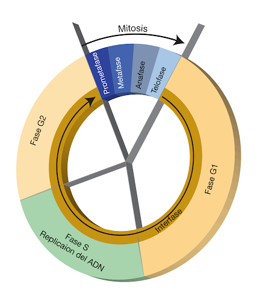
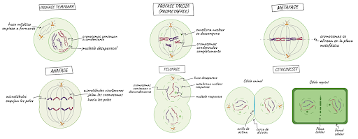
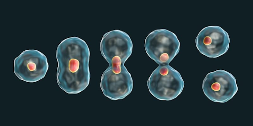
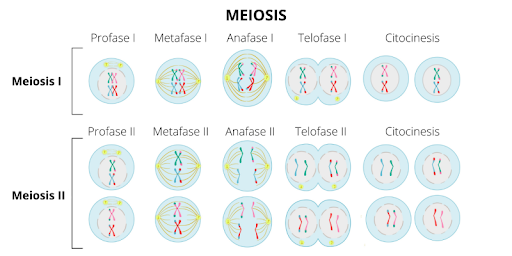
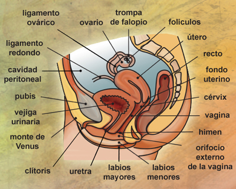
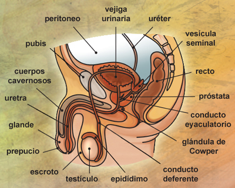
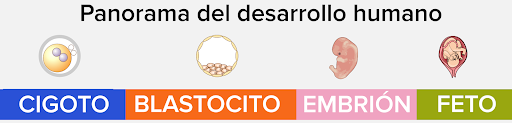

Integrantes:
- Rafael Aviña Luna #3
- María Fernanda Gómez Chowell #10
- Daniel Marcelo Ruiz Villalobos #28
- Roberto Ivan Tovar Mares #29
- Jorge Mauricio Verde Villaseñor #31
Marco Teórico:
Desarrollo del ciclo celular y sus fases: El ciclo celular son todos los procesos y las etapas por las que la célula obtiene su crecimiento y alcanza su división celular. La célula pasa la mayor parte de su tiempo en la etapa llamada interfase, donde crece, duplica sus cromosomas y se prepara para la división. Una vez terminada esta etapa, la célula entra en la etapa mitótica (o etapa M) y completa su división. Las células resultantes, llamadas células hijas, comienzan sus respectivas etapas de interfase y empiezan así una nueva serie de ciclos celulares. (National Human Genome Research Institute [NHGRI], 2023)
 (NHGRI, 2023) En la etapa de la interfase, ocurren tres fases, la fase G1, la fase S y la fase G2. Fase G1: Durante esta fase, la célula crece físicamente copia los organelos y hace componentes moleculares que necesitará en etapas posteriores.Fase S: En la fase S, la célula sintetiza una copia completa del ADN en su núcleo. También duplica una estructura de organización de microtúbulos llamada centrosoma. Los centrosomas ayudan a separar el ADN durante la etapa mitótica.Fase G2: Durante la fase G2, la célula crece más, hace proteínas y organelos, y comienza a reorganizar su contenido en preparación para la mitosis. La fase G2 termina cuando la mitosis comienza. (Khan Academy, 2023).
En la etapa mitótica (también llamada etapa M) la célula divide su ADN duplicado y su citoplasma para formar dos nuevas células. La etapa M implica dos procesos distintos relacionados con la división: mitosis y citocinesis.Durante la mitosis ocurren 4 fases: la profase, la metafase, la anafase y la telofase. Profase temprana: El huso mitótico empieza a formarse, los cromosomas comienzan a condensarse y el nucleolo desaparece.Profase tardía: La envoltura nuclear se descompone y los cromosomas se completan de condensar. Metafase: Los cromosomas se alinean en la placa metafásica. Anafase: Los microtúbulos empujan los polos y los microtúbulos cinetocóricos jalan los cromosomas hacia los polos. Telofase: Los cromosomas comienzan a descondensarse, el huso desaparece, la membrana nuclear y el nucleolo reaparecen. Después de la mitosis ocurre la citocinesis, donde ocurre la separación física del citoplasma en las dos células hijas. (Khan Academy, 2023b)

(Khan Academy, 2023b)
Tipos de reproducción celular (asexual y sexual): La reproducción o división celular es el proceso en el que una célula madre se divide para formar a dos células hijas distintas. Se da en todas las formas de vida. (Editorial Etecé, 2021)

Imagen de la fisión binaria (Editorial Etecé, 2021)
La reproducción asexual es aquella que requiere de un único organismo, que no necesita aparearse para formar nuevos individuos. Dado que no hay intervención de células sexuales, en la reproducción sexual no hay intercambio ni combinación de información genética. Cuando un organismo se reproduce de manera asexual, lo hace a través de métodos que consisten en la replicación o duplicación de su contenido genético, para dar origen a individuos nuevos genéticamente idénticos a sí mismo. Los tipos de reproducción asexual son: Gemación, Fragmentación, Fisión binaria, Esporulación, Apomixis, Partenogénesis y la Poliembrionía. Una ventaja de la reproducción asexual es que es rápida y simple, pues no se necesitan producir células especializadas (gametos) para realizarse. Una gran desventaja es la ausencia de variabilidad genética, básicamente los descendientes son idénticos al progenitor, a menos de que hayan mutaciones imprevistas (Editorial Etecé, 2022). En los organismos eucariotas se aplican procesos más complejos de reproducción celular, debido a que están dotados de más de un cromosoma. Estos procesos son: la mitosis (anteriormente explicada) y la meiosis. La meiosis es un proceso más complejo que la mitosis, y es la clave para la reproducción sexual, pues se producen las células sexuales o gametos (con la mitad de la carga genética), dotadas de variabilidad genética. Esto se da para aportar la mitad de la carga genómica durante la fecundación, y así obtener descendencia genéticamente única, evitando la reproducción asexual. A través de la meiosis, una célula diploide sufre dos divisiones consecutivas, para obtener así cuatro células hijas haploides (Editorial Etecé, 2021). La reproducción sexual es aquella que requiere de dos organismos de distinto sexo para generar a un organismo nuevo, producto de la combinación de los materiales genéticos de los progenitores. Es característica exclusiva de los organismos eucariotas, o sea, de aquellos cuyas células poseen núcleo bien definido, y sobre todo de los pluricelulares. Se da conforme a distintos mecanismos, que conducen siempre a la fecundación: la unión de células sexuales provenientes de cada uno de los progenitores, para iniciar un proceso de multiplicación acelerada y conformar un cigoto, que posteriormente será embrión y finalmente un individuo nuevo de la especie, listo para incorporarse al ecosistema. El proceso de la reproducción sexual conforma varias etapas, que son: Gametogénesis, Fecundación, Desarrollo Embrionario y Nacimiento. La gran mayoría de los animales se reproducen de manera sexual, y se dividen en las siguientes categorías: Animales ovíparos (ponen huevos), Animales vivíparos (ocurre parto) y Animales ovovivíparos (el huevo se desarrolla en el cuerpo de la madre) (Editorial Etecé, 2022b).

(Editorial Etecé, 2021)
La meiosis tiene dos fases diferenciadas: meiosis I y meiosis II. Ambas tienen a su vez, 4 etapas al igual que la mitosis: profase, metafase, anafase y telofase.
En la meiosis I (también conocida como la fase
reductiva) resultan dos células con la mitad de carga genética.
- Profase I:
Está compuesta por varias etapas. En la primera etapa el ADN se condensa en cromosomas. Luego, los cromosomas homólogos se aparean formando una estructura característica llamada complejo sinaptonémico, donde se produce el entrecruzamiento y la recombinación génica. Por último, los cromosomas homólogos se separan y la envoltura del núcleo desaparece.
- Metafase I:
Cada cromosoma, compuesto por dos cromátidas cada uno, se alinea sobre el plano medio de la célula y se une a los microtúbulos del huso acromático.
- Anafase I:
Los cromosomas homólogos apareados se separan y se mueven hacia polos opuestos. Cada polo recibe una combinación aleatoria de cromosomas maternos y paternos, pero solo un miembro de cada par homólogo está presente en cada polo. Las cromátidas hermanas permanecen unidas a sus centrómeros.
- Telofase I:
Uno de cada par de cromosomas homólogos está en cada polo. Se forma nuevamente la membrana nuclear. Cada núcleo contiene el número de cromosomas haploides, pero cada cromosoma es un cromosoma duplicado (consiste en un par de cromátidas). Ocurre la citocinesis, que resulta en dos células hijas haploides.
En la meiosis II (también conocida como la fase duplicativa y asemejada a la mitosis) se forman dos individuos enteros duplicando el ADN. Profase II: Los cromosomas se condensan. La envoltura del núcleo desaparece.
- Metafase II:
Los cromosomas se alinean sobre los planos medios de sus células.
Anafase II: Las cromátidas se separan y se mueven hacia polos opuestos.
- Telofase II:
Las cromátidas que llegan a cada polo de la célula son ahora los cromosomas. Las envolturas nucleares se forman de nuevo, los cromosomas gradualmente se alargan para elaborar fibras de cromatina, y ocurre la citocinesis. Las dos sucesivas divisiones de meiosis producen cuatro núcleos haploides, cada uno con un cromosoma de cada tipo. Cada célula haploide resultante tiene una diferente combinación de genes. (Editorial Etecé, 2021)
Los órganos del aparato reproductor femenino constan de genitales internos y externos.
|  (Anatomía y fisiología femeninas, s. f.) |
|
Monte del pubis (monte de venus): Es una masa de tejido adiposo subcutáneo ubicada anterior a la sínfisis púbica. La piel que recubre el monte del pubis está cubierta con un parche triangular de vello púbico.Labios mayores: son dos pliegues cutáneos longitudinales cubiertos de vello púbico. Son la parte más lateral de la vulva y se extienden desde el monte del pubis hasta el periné. La hendidura entre los labios mayores se llama hendidura pudenda. Contiene los labios menores y el vestíbulo de la vagina. Se fusionan anteriormente (comisura anterior) y posteriormente (comisura posterior).Labios menores: Dos pliegues cutáneos longitudinales, delgados y sin pelo que se encuentran entre los labios mayores. Rodean el vestíbulo de la vagina y sus orificios uretral y vaginal. Contribuyen a la formación del prepucio y el frenillo del clítoris.Clítoris: Órgano eréctil, responsable de las sensaciones sexuales. Análogo al pene masculino. Situado en la parte más superior del vestíbulo de la vagina, el clítoris está rodeado por la parte anterior de los labios menores. Tiene tres partes: tallo, cuerpo y glande. El cuerpo consta de dos cuerpos cavernosos y dos puntos de unión (pilares). Gracias a sus abundantes terminaciones sexuales, constituyen la mayor excitabilidad sexual de la mujer.Vestíbulo de la vagina: Región entre los labios menores. Contiene el orificio vaginal, la abertura de la uretra femenina y las aberturas para los conductos excretores de las glándulas vestibulares mayor y menor.Glándulas vestibulares: Hay dos tipos: mayores y menores. Las mayores se encuentran a cada lado del vestíbulo de la vagina y las menores entre los orificios uretral y vaginal.Bulbo del vestíbulo: Par de tejidos eréctiles subcutáneos. Se extienden a cada lado del vestíbulo de la vagina y se unen frente a los orificios uretrales. (Vélez, 2023)
La anatomía del aparato reproductor masculino incluye al escroto, los testículos, los ductos espermáticos, las glándulas sexuales y el pene. Estos órganos trabajan en conjunto para producir espermatozoides (el gameto masculino) y otros componentes del semen. Estos órganos también funcionan en conjunto para expulsar el semen del cuerpo y depositarlo. (Anónimo, 2015)Escroto: El escroto es una “bolsa” de piel que cuelga debajo del pene; contiene los testículos y los mantiene a la temperatura correcta. Si hace mucho frío, el escroto lleva los testículos más cerca del cuerpo. (Anónimo, 2023)Testículos: Los testículos son 2 glándulas con forma de pelota ubicadas dentro del escroto. Son los encargados de producir el esperma y hormonas como la testosterona. También son conocidos como las“gónadas masculinas”.Epidídimo: Es un conducto en el que el esperma madura. Conecta cada testículo con cada conducto deferente y almacena el esperma antes de eyacular.Conducto deferente: Es un conducto largo y angosto que, durante la eyaculación, transporta el esperma desde el epidídimo hasta las vesículas seminales. Hay 2, uno conectado a cada epidídimo.Vesículas seminales: Las vesículas seminales son 2 órganos pequeños que producen el semen, el fluido por el cual se mueve el esperma. Se encuentran ubicadas debajo de la vejiga.Próstata: La próstata produce un líquido que ayuda al esperma a moverse; es aproximadamente del tamaño de una nuez o de una pelota de golf. Es muy sensible a la presión o al tacto, lo que muchos encuentran placentero.Glándulas de cowper: Producen un fluido conocido como “pre eyaculación”, o “líquido pre eyaculatorio”, que prepara a la uretra para la eyaculación. Este líquido reduce la fricción para que el semen pueda desplazarse más fácilmente. Están ubicadas debajo de la próstata y conectadas a la uretra. También se denominan “glándulas bulbouretrales”.Uretra: Es un conducto que transporta la orina, la pre eyaculación y el semen a la abertura de la uretra para que salgan del cuerpo.Cremáster: Es un músculo que acerca el escroto y los testículos al cuerpo cuando tienes frío, cuando te excitas o cuando recibes caricias en la parte interna del muslo. (Anónimo, 2023)Recto: Porción más baja del intestino grueso que llega hasta el ano. (Anónimo, 2015). Su función es donde el organismo almacena la materia fecal. (Anónimo, 2020)Vejiga: Es un órgano hueco de forma triangular, situado en el abdomen inferior. Se sostiene en su lugar por los ligamentos que se encuentran unidos a otros órganos y a los huesos pélvicos.(Anónimo, 2015). En la vejiga se acumula la orina procedente de los riñones hasta que se elimina del cuerpo. (Anónimo, 2022)Pene: El pene es el órgano masculino utilizado para la micción y la relación sexual. (Anónimo, 2023). Es la parte exterior del aparato reproductor masculino y está localizado arriba del escroto y abajo del ombligo. (Anónimo, 2015)
|  (Anatomía y fisiología masculinas, s. f.) |
Etapas del desarrollo humano:
- Etapa de cigoto:
El cigoto se forma cuando el gameto masculino y el femenino se fusionan. (Anónimo, 2023). La etapa del embrión abarca desde el día 1 de desarrollo embrionario, que aún se denomina cigoto, hasta la octava semana de gestación. (Bilbao et al., 2021)
- Etapa de blastocisto:
El cigoto unicelular se comienza a dividir en una masa sólida de células. Luego se convierte en una masa hueca de células llamada blastocisto y se pega al recubrimiento del útero de la madre.(Anónimo, 2023). La etapa de un blastocisto es un embrión de 5/6 días de desarrollo que presenta una estructura celular compleja formada por aproximadamente 200 células. La fase de blastocisto es el estadio de desarrollo previo a la implantación del embrión en el útero materno. (Anónimo, 2021)- Etapa embrionaria:
Comienzan a surgir los principales órganos internos y características externas, y se forma un embrión. En esta etapa, aparecen el corazón, cerebro y médula espinal. Los brazos y piernas se comienzan a desarrollar.(Anónimo, 2023). El periodo embrionario es la etapa en la que ocurre la formación de todos los aparatos y sistemas del embrión, proceso conocido como organogénesis; esta fase comprende de la cuarta a la octava semanas. Aunque el periodo embrionario es muy corto, es una etapa en la cual el embrión tiene más riesgos de presentar una anomalía congénita, porque es muy sensible a la acción de los teratógenos. (Norberto López Serna, 2023) Etapa fetal: Cuando las características formadas del embrión comienzan a crecer y desarrollarse, el organismo se considera un feto. Durante este tiempo las estructuras se diferencian y especializan. (Anónimo, 2023).
La etapa de un periodo fetal es desde la novena semana hasta el nacimiento. El desarrollo durante el período fetal está relacionado con el rápido crecimiento del cuerpo y con la diferenciación de los tejidos, los órganos y los sistemas. Un cambio notable durante el período fetal es la ralentización relativa del crecimiento de la cabeza en comparación con el del resto del cuerpo. El ritmo de crecimiento corporal durante el período fetal es muy rápido y el incremento del peso corporal durante las últimas semanas del embarazo es extraordinario. Los períodos de crecimiento continuado normal se alternan con intervalos prolongados de ausencia de crecimiento (Elsevier Connect, 2020).
La menstruación es la descamación del revestimiento interno del útero (endometrio), que se acompaña de sangrado. Se produce aproximadamente en ciclos mensuales durante los años fértiles de la vida de la mujer, excepto durante el embarazo. La menstruación empieza en la pubertad (Barad, 2023). El ciclo menstrual de la mujer consta de tres fases: Folicular (antes de la liberación del óvulo) Ovulatoria (liberación del huevo) Lútea (después de la liberación del óvulo). La fase ovulatoria dura habitualmente entre 16 y 32 horas. Acaba con la liberación del óvulo, unas 10 a 12 horas después del aumento de la hormona luteinizante. El óvulo puede fertilizarse hasta un máximo de unas 12 horas después de su liberación (Barad, 2023).
En la fase ovulatoria comienza cuando se produce el pico de los niveles de hormona luteinizante. Esta hormona estimula el folículo dominante, que se aproxima a la superficie del ovario para finalmente romperse y liberar el óvulo. La cantidad de foliculoestimulante aumenta en menor grado. El aumento de la hormona luteinizante puede detectarse mediante la determinación de sus niveles en la orina, esta medida se puede utilizar para determinar aproximadamente cuándo ocurrirá la ovulación. Los espermatozoides sobreviven de 3 a 5 días, por lo que un óvulo puede ser fecundado incluso si los espermatozoides entran en el aparato reproductor antes de que el óvulo sea liberado. En cada ciclo, hay alrededor de 6 días en los que puede ocurrir el embarazo, estas son las fechas más fértiles de las mujeres (la llamada ventana fértil). La ventana fértil generalmente comienza 5 días antes de la ovulación y termina 1 día después de la ovulación. El número real de días fértiles varía de un ciclo a otro y de una mujer a otra (Barad, 2023).

(Anónimo, 2023)
Conclusión del marco teórico:
Durante el desarrollo y explicaciones en el marco teórico se trataron varios temas relacionados a la sexualidad y de cómo logra desarrollarse biológicamente. Tenemos que tener en cuenta que el término “sexualidad” es todavía confuso para la sociedad y no logra tener una definición objetiva, pues siempre se asoman y salen a la vista distintas ideologías y propuestas para lo que puede ser la sexualidad. A lo largo del marco teórico se abordó el tema de la sexualidad desde un punto de vista anatómico y fisiológico, tomando como punto de referencia una definición en específico para la sexualidad.
Podríamos definir a la sexualidad como el conjunto de elementos y condiciones biológicas, anatómicas y fisiológicas que forman parte y caracterizan a los sexos de la naturaleza. Los temas vistos en el marco teórico, que fueron: Desarrollo del ciclo celular y sus fases, Tipos de reproducción celular, reproducción sexual y asexual, anatomía y fisiología del aparato reproductor femenino y masculino y fecundación y desarrollo embrionario, de algún modo, sirven para fomentar la definición de sexualidad antes vista para la gente que enseña estos temas, pues están estrechamente relacionados con la dicotomía y la única existencia de dos sexos y géneros (masculino y femenino), rechazando completamente cualquier otra posibilidad (o al menos en los seres humanos). Moviéndonos a un punto de vista y a una intención más divulgativa, a continuación se dará una breve conclusión y resumen de los temas tratados en el marco teórico.
Vimos cómo las células tienen un ciclo con el cual logran su división celular y las etapas por las que pasan. Pasan la mayor parte de tiempo en la interfase, que tiene a la fase G1, a la fase S y a la fase G2. Después de eso pasan a la etapa mitótica, donde sucede la mitosis y después la citocinesis. En la etapa de la mitosis suceden otras 4 fases, la profase, la anafase, la metafase y la interfase. Después de ver el ciclo de la célula, vimos los dos principales tipos de reproducción en organismos pluricelulares avanzados, la reproducción sexual y la reproducción asexual. La sexual básicamente depende de dos organismos para crear a uno nuevo, mientras que la asexual solo la hace un individuo solitario. La reproducción celular puede ser básicamente lo mismo que la división celular, y después de ver el ciclo celular de manera detallada, vimos la reproducción celular de la misma manera. Debido a que la fisión binaria y la mitosis fueron anteriormente explicados, lo principal que se investigó fue la meiosis, un proceso de reproducción celular compleja en los organismos eucariotas. La meiosis también tiene 4 fases, nombradas de la misma manera que la etapa mitótica del ciclo celular. Además, la meiosis tiene meiosis 1 y meiosis 2. Para casi acabar el marco teórico y la investigación relacionada, vimos la anatomía y fisiología de los aparatos reproductores femenino y masculino respectivamente. En el caso de la anatomía del aparato reproductor femenino, vimos que se dividen en genitales internos y externos. En los internos se encuentran la vagina, el útero, los ovarios y las trompas de falopio. En los externos se encuentran el monte del pubis, los labios mayores y menores, el clítoris, el vestíbulo de la vagina, las glándulas vestibulares y el bulbo del vestíbulo. En su fisiología detallamos las funciones específicas de los órganos sexuales. En la anatomía del aparato reproductor masculino encontramos al escroto, los testículos, los conductos deferentes, el pene, la próstata, el epidídimo, las vesículas seminales, y la uretra. En su fisiología encontramos el funcionamiento de estos. Terminando el marco teórico tenemos a la fecundación y el desarrollo embrionario, donde mostramos las etapas del desarrollo humano como ejemplo. Las etapas del desarrollo humano son: etapa de cigoto, etapa de blastocisto, etapa embrionaria y la etapa fetal.